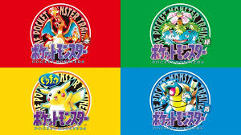
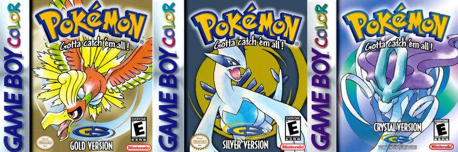
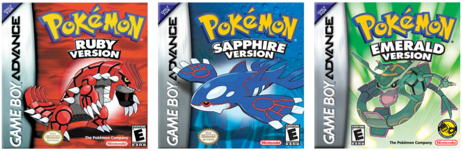

Pokémon, abreviação de Pocket Monsters, é uma famosa franquia da Nintendo. O universo abrange jogos de videogame, cartas colecionáveis (Pokémon TCG), e jogos mobile, como o popular Pokémon GO. Pokémon é uma franquia de mídia japonesa composta por jogos eletrônicos, séries de anime e filmes, um jogo de cartas colecionáveis e outras mídias relacionadas. A franquia se passa em um universo compartilhado no qual humanos coexistem com criaturas conhecidas pelo nome de Pokémon, uma grande variedade de espécies dotadas de poderes especiais. O público-alvo principal da franquia são crianças de 5 a 12 anos, mas sabe-se que atrai pessoas de todas as idades. Estima-se que Pokémon seja a franquia de mídia de maior faturamento do mundo e uma das franquias de jogos eletrônicos mais vendidas. Pokémon é uma das franquias de videogames mais populares do mundo, criada pela empresa japonesa Nintendo em parceria com a Game Freak. O primeiro jogo foi lançado em 1996 para o console Game Boy e tinha como objetivo capturar, treinar e batalhar com criaturas chamadas Pokémon.
A primeira geração de Pokémon foi composta pelos jogos Pokémon Red, Green (lançado apenas no Japão), Blue e, posteriormente, Yellow. Nesses jogos, os jogadores assumiam o papel de um jovem treinador que explorava a região de Kanto,カントー地方 (Kantō-chihō), em busca de se tornar o Campeão Pokémon. Durante a aventura, era possível capturar, treinar e batalhar com os 151 Pokémon originais, formando equipes para enfrentar líderes de ginásio e a poderosa Elite dos Quatro. Essa geração apresentou personagens icônicos que se tornaram símbolos da franquia, como Pikachu, Charmander, Bulbasaur e Squirtle. O enorme sucesso desses jogos deu origem a uma das maiores franquias de entretenimento do mundo, inspirando séries animadas, filmes, cartas colecionáveis e diversos outros produtos.

A segunda geração começou com Pokémon Gold e Silver, seguidos por Pokémon Crystal, e apresentou a região de Johto,ジョウト地方 (Jōto-chihō). Esses jogos adicionaram 100 novos Pokémon, aumentando a Pokédex para 251 criaturas. Uma das grandes novidades foi o sistema de dia e noite, que fazia alguns Pokémon aparecerem apenas em determinados horários. Também foram introduzidos a reprodução de Pokémon, os Pokémon Bebês, os tipos Sombrio e Aço e novas formas de evolução. Outro destaque é que, depois de completar a aventura em Johto, o jogador pode retornar à região de Kanto, onde pode enfrentar novamente diversos Líderes de Ginásio.

A terceira geração foi apresentada nos jogos Pokémon Ruby, Sapphire e Emerald, ambientados na região de Hoenn, ホウエン地方 (Hōen-chihō). Essa geração acrescentou 135 novos Pokémon, levando a Pokédex para um total de 386 espécies. Os jogos trouxeram várias mudanças importantes no sistema de batalhas, como as Habilidades e as Naturezas, que influenciam as características dos Pokémon. Também foram introduzidas as Batalhas em Dupla, permitindo que dois Pokémon participassem da batalha ao mesmo tempo. A história também ganhou destaque com os lendários Groudon, Kyogre e Rayquaza e os conflitos entre as equipes Magma e Aqua.

A quarta geração começou com Pokémon Diamond e Pearl e posteriormente recebeu Pokémon Platinum, levando os jogadores para a região de Sinnoh, シンオウ (Shin'ō). Foram adicionados 107 novos Pokémon, muitos deles sendo evoluções de Pokémon de gerações anteriores. A história apresenta importantes Pokémon lendários, como Dialga, Palkia e Giratina, relacionados ao tempo, ao espaço e ao Mundo Distorcido. Essa geração também trouxe melhorias nos gráficos e nas batalhas e ficou marcada pela expansão do sistema de batalhas online. Sinnoh também possui uma grande variedade de ambientes, como montanhas, florestas, cavernas e áreas cobertas de neve.